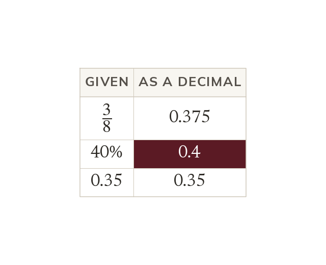
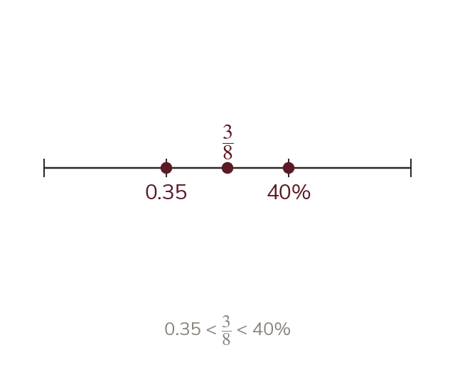
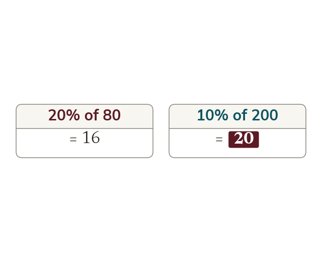

Topic 7.16 · Decimals and Rounding · Lesson 6 of 6
Comparing FDP in Context
Is 38of a pizza more than 40% of it? Shops, tests and surveys mix fractions, decimals and percentages. Today you convert them to one form so they can be compared fairly.
By the end you’ll know…
Quantities written in different forms can only be compared once converted to a common form.
Decimals are usually the easiest common form, since they compare place by place.
A percentage of one amount cannot be compared with a percentage of a different amount.
The form an answer is given in should match the form the question uses.
By the end you can
G4Order a mixed set of fractions, decimals and percentages by converting to a common form.
G4Solve problems requiring conversion between fractions, decimals and percentages in context.
Work down the page at your own pace. Write every answer in your book first, then click to check it.
01
Do Now
About 5 minutes
1
Which is bigger, 23or 35?
23: 1015is more than 915.
2
Put 12, 38and 58in order, smallest first.
38, 12, 58.
3
Write 34and 56with denominator 12.
912and 1012.
4
Which is smaller, 710or 34?
710: 1420is less than 1520.
Remember these?
LAST LESSONWrite 59as a decimal.
0.555..., which is 0.5 recurring.
LAST WEEKFind the midpoint of (-3, 2) and (5, 8).
(1, 5).
LAST TERMWork out x2 + x3.
3x6 + 2x6 = 5x6.
LAST YEARWork out 5,208 ÷ 6.
868.
02
Learn
Read each card, then follow the worked examples one step at a time.

One common form
Convert quantities to one form before comparing them. Decimals are usually easiest: they compare place by place.
Quantities in different forms can only be compared once they are converted to the same form. Decimals are usually the easiest, since they compare place by place.

Ordering a mixed set
Once every value is a decimal, the order is read from the decimals. The values are then written back in their original forms.
WORKED EXAMPLE A
Put 0.62, 35and 65% in order, smallest first.
Write each as a decimal0.62, 0.6 and 0.65
Order them0.6, 0.62, 0.65
In order35, 0.62, 65%
WORKED EXAMPLE B
Put 720, 0.3 and 33% in order, smallest first.
Write each as a decimal0.35, 0.3 and 0.33
Order them0.3, 0.33, 0.35
In order0.3, 33%, 720
YOUR TURN · a
Put 0.45, 25and 42% in order, smallest first.
25, 42%, 0.45.
YOUR TURN · b
Put 58, 0.6, 61% and 0.62 in order, largest first.
58, 0.62, 61%, 0.6.
03
Check your understanding
Pick an answer. If it's wrong, the feedback tells you which mistake it was.
Which is the largest: 710, 0.68 or 72%?
Not quite. Make them all the same form: 70%, 68%, 72%.
Not quite. More digits doesn't mean bigger. 0.68 = 68%.
Yes. As percentages: 70%, 68% and 72%. 72% is largest.
Not quite. As percentages they are 70%, 68% and 72%: all different.
Which list is in order, smallest first?
Yes. As decimals: 0.3, 0.333…, 0.35.
Not quite.1 ÷ 3 = 0.333…, which is more than 0.3.
Not quite.35% = 0.35, the largest.
Not quite.1 ÷ 3 = 0.333…, which is less than 35% = 0.35.
What is the best way to compare 58and 0.6?
Not quite. Different forms can't be compared digit by digit. 5 ÷ 8 = 0.625.
Not quite. Different forms can't be compared digit by digit. 5 ÷ 8 = 0.625.
Not quite.0.6 = 60%, not 6%. Convert 5 ÷ 8 = 0.625 instead.
Yes.0.625 > 0.6, so 58is bigger.
04
Practise
mark as you go
Checkpoint. Put 0.7, 1725, 69% and 0.71 in order, smallest first.Show your teacher before you go on
1
Put 0.3, 14and 28% in order, smallest first.
As decimals: 0.3, 0.25, 0.28 14, 28%, 0.3
2
Put 310, 0.35 and 32% in order, smallest first.
As decimals: 0.3, 0.35, 0.32 310, 32%, 0.35
3
Which is largest: 45, 0.78 or 81%?
As decimals: 0.8, 0.78, 0.81 81%
4
Put 0.9, 78and 88% in order, smallest first.
As decimals: 0.9, 0.875, 0.88 78, 88%, 0.9
5
Put 23, 0.6, 65% and 0.67 in order, largest first.
Find a number between 45% and 0.46. Write it as a fraction.
0.45 < 0.455 < 0.46 As a fraction: 0.455 = 4551000 = 91200
05
Learn
Read each card, then follow the worked examples one step at a time.
Comparing results
Compare scores out of different totals as percentages. So 18 out of 25 (72%) beats 35 out of 50 (70%).
Scores out of different totals are compared by converting each to a percentage. 18 out of 25 is 72%, which beats 35 out of 50, which is 70%.

Percentages of different amounts
Work out each percentage amount before comparing. 20% of 80 is 16, but 10% of 200 is 20.
A percentage of one amount cannot be compared with a percentage of another until both are worked out. 20% of 80 is 16, but 10% of 200 is 20.
WORKED EXAMPLE C
Ali scores 21 out of 30 and Ben scores 17 out of 25. Who did better?
Convert Ali's score21 ÷ 30 = 70%
Convert Ben's score17 ÷ 25 = 68%
Did betterAli
WORKED EXAMPLE D
Shop A takes 14off £60, and shop B takes 30% off £50. Which price is lower?
Find 1/4 of £60£15
£60 - £15 = £45
Find 30% of £50£15
£50 - £15 = £35
Lower priceshop B, at £35
YOUR TURN · c
Which is the better score, 13 out of 20 or 32 out of 50?
65% and 64%, so 13 out of 20.
YOUR TURN · d
A coat costs £80 with 15% off, or £75 with 110off. Which is cheaper?
£68 and £67.50, so the £75 coat with 110off.
06
Check your understanding
Pick an answer. If it's wrong, the feedback tells you which mistake it was.
Which of these scores is the best?
Yes. As percentages: 85%, 84%, 80%, 84%. 17 out of 20 wins.
Not quite.42 ÷ 50 = 84%, but 17 ÷ 20 = 85%.
Not quite.8 ÷ 10 = 80%, the lowest. 17 ÷ 20 = 85%.
Not quite.21 ÷ 25 = 84%, but 17 ÷ 20 = 85%.
Which is more, 30% of 70 or 25% of 90?
Not quite. Work them out: 30% of 70 = 21, 25% of 90 = 22.5.
Yes.30% of 70 = 21 and 25% of 90 = 22.5, so 25% of 90.
Not quite. Work them out: 21 and 22.5, not equal.
Not quite. Use 10% blocks: 21 and 22.5. No calculator needed.
35of pupils walk to school. What percentage is this?
Not quite.3 ÷ 5 = 0.6 = 60%, not 0.6%.
Not quite.35 = 610 = 60%.
Not quite.0.6 is right, but the question asks for a percentage: 60%.
Yes.35 = 60100 = 60%.
07
Practise
mark as you go
Checkpoint. In class A, 18 of the 24 pupils have a pet. In class B, 70% have a pet. Which class has the greater proportion? Give your answer as a percentage.Show your teacher before you go on
1
Which is the better score, 34 out of 40 or 42 out of 50?
34 ÷ 40 = 85% and 42 ÷ 50 = 84% 34 out of 40
2
Shop A takes 15off £45. Shop B takes 25% off £50. Which price is lower?
A: £45 - £9 = £36 B: £50 - £12.50 = £37.50 Shop A
3
In class A, 12 of 16 pupils like PE. In class B, 80% do. Which class has the greater proportion?
12 ÷ 16 = 75% Class B (80% against 75%)
4
Which is more, 40% of 60 or 38of 64?
40% of 60 = 24 38of 64 = 24 They are equal
5
Which is more, 0.35 of £80 or 30% of £90?
0.35 × £80 = £28 30% of £90 = £27 So 0.35 of £80 is more
EXT
In a survey, 38choose tea, 0.4 choose coffee and the rest choose juice. What percentage choose juice?